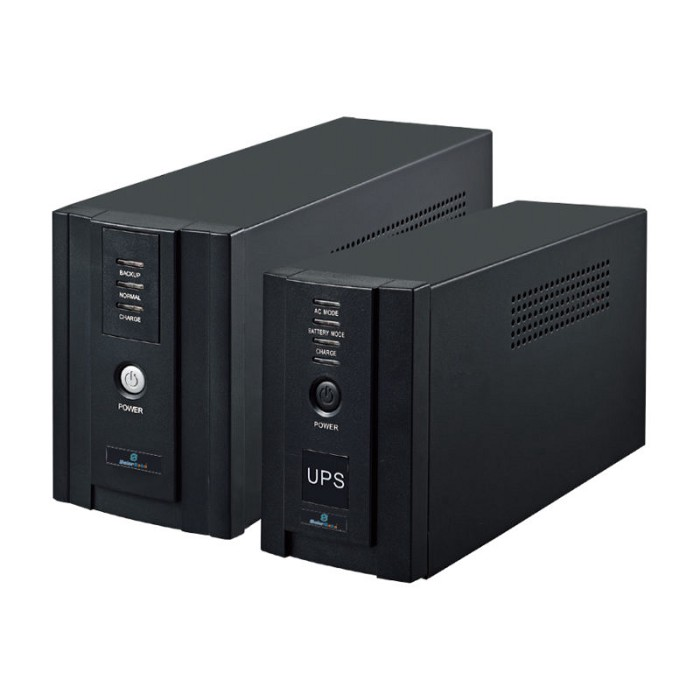
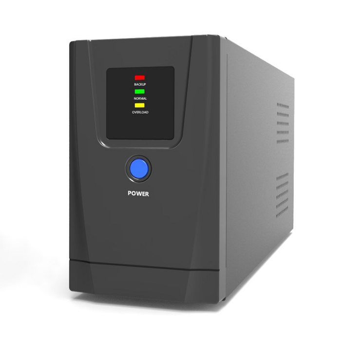
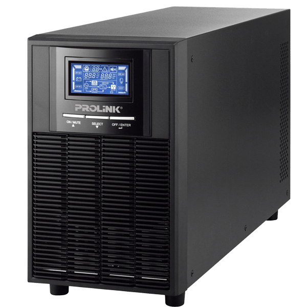

Uninterruptible Power Supply (UPS) Buying Guide

An online UPS conditioning its power output
A UPS is something that sits between your hardware and the primary source of power to provide backup power when your primary source of power fails. It helps you work uninterrupted till the backup generator kicks in. Or if you don't have a generator you can save your work and shut down your computer safely till the power comes back on. This is the reason why servers have at least one failover power supply and an online UPS. Depending on the size of the business some companies have backup generators for emergencies and to maintain an uninterrupted workflow.
In production environments, having one of their servers fail is something a company never tolerates. That can result in the company losing a lot of money because it affects the business directly. Depending on the country you live in, the quality of the power you get from your national grid can be vary. Sometimes you get a very low power supply than the rated amount. This can affect your computer and other electrical appliances very badly without you even knowing about it. And there is always the possibility of a sudden power outage. You have to take that into account as well. Imagine you working on a very important project for hours and suddenly the power goes off. Now you're left with nothing to show for your hours of hard work.
The Offline UPS
There are three types of Uninterruptible power supplies you can buy on the market. Offline UPS, Line Interactive UPS, and the Online UPS. An offline UPS is the cheapest option you can find on the market. That's because it doesn’t do any power conditioning. It sits between your PC and your power outlet and switches to battery power if there is a sudden power loss using a relay. This option can be very efficient since it doesn't do anything other than charging its battery when it's low.
The Line-interactive UPS. Bear in mind that there is no obvious physical difference between an offline UPS and a line-interactive UPS
The second option sits in between an offline UPS and an Online UPS. Because the line-interactive UPS actually does some power conditioning using an AVR. But this conditioning technique isn't successful as an Online UPS and only can be done up to a certain point. These UPSs can be expensive but not as expensive as an Online UPS.
An Online UPS with an interactive display.
The last and most effective solution we have is the online UPS. This type of UPS always keeps the load inside the UPS and because of that, the time it takes to change from grid power to battery power is virtually ZERO. And the other benefit you gain from having an online UPS is that they are sine wave which is the optimum waveform for electronic equipment. And the sine wave is the most expensive output form for UPS manufacturers to produce due to more complex circuitry and components.
Top computer manufacturers like HP, Lenovo, Dell, and Acer recommend Uninterruptible Power Supplies (UPS) based on Pure Sine Wave output. This type of UPSs conditions the power output before it leaves the UPS to your hardware. This means that even if the power is low and not correct in the waveform, this corrects it. Because of this reason, an online UPS does not operate very efficiently. But it does pay off eventually.
Always make sure to choose your UPS to match your use case. There is no point in investing in high-end equipment if they're not used to their full potential.
Do a thorough research and monitor your grid power supply for a while. For that, you can use a very inexpensive tool called AC Current Voltage Amperage Power Energy Panel. Using this device, you can get a firm idea about the quality of your grid power supply. You can use that output to make an informed decision.
Conclusion
For servers and workstations that run 24/7 and for expensive audio equipment, it's a good idea to feed power from an online UPS. Because, especially with high-end audio equipment, the quality of the sound depends on the power they feed upon. For low-powered computers and other small devices such as routers and small scale switches, you can probably get away with either offline or a line-interactive UPS.